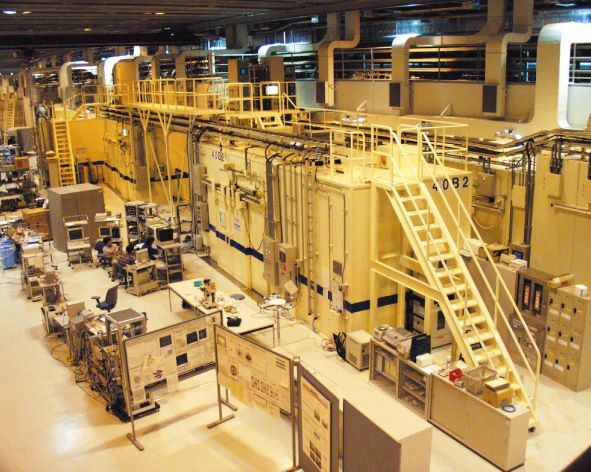

大型放射光施設“SPring-8は国内外の産学官の研究者等に開かれた共同利用施設です。 利用者はX線を中心とした電磁波の高輝度光源である放射光を活用した分析技術（X線 回折・散乱X線吸収分光X線イメージング等）による材料評価実験を行うことができます。
加速器から放出される放射光を用いて実験を行うための設備を「ビームライン」（以下BL）と呼びます。
SPring-8には、蓄積リングと呼ばれる周長約1.5 kmの加速器に沿って50本以上のBLが設置されており、それぞれのBLは特定の実験が効果的に且つ効率よく実施できるように設計・構築されています。
BLには、「共用BL」、「理研BL」、「専用BL」といった、運営・管理者が異なる
３種類のBL が存在します。

現在、一般利用者が利用できる共用BLは26本（2022年5月1日現在）で各BLで実施されている材料評価実験は以下の通りです。 BL番号からSPring-8公式ウェブサイトのBL概要ページへジャンプします。
| 実験技術 | BL番号 | BL名 |
|---|---|---|
| X線回折・散乱 | BL02B1 | 単結晶構造解析 |
| BL02B2 | 粉末結晶構造解析 | |
| BL04B2 | 高エネルギーX線回折 | |
| BL13XU | X線回折・散乱I | |
| BL19B2 | X線回折・散乱II | |
| BL28B2 | 白色X線回折 | |
| BL40B2 | SAXS BM | |
| BL40XU | SAXS ID | |
| X線分光 | BL01B1 | XAFS I |
| BL09XU | HAXPES I | |
| BL14B2 | XAFS II | |
| BL25SU | 軟X線固体分光 | |
| BL27SU | 軟X線光化学 | |
| BL37XU | 分光分析 | |
| BL39XU | X線吸収・発光分光 | |
| BL46XU | HAXPES II | |
| X線イメージング | BL20XU | 医学・イメージング II |
| BL20B2 | 医学・イメージング I | |
| BL28B2 | 白色X線回折 | |
| BL47XU | マイクロCT | |
| 蛋白質構造解析 （X 線回折） |
BL41XU | 生体高分子結晶解析 I |
| BL45XU | 生体高分子結晶解析 II | |
| 高圧下構造解析 | BL04B1 | 高温高圧 |
| BL10XU | 高圧構造物性 | |
| X線非弾性散乱 | BL08W | 高エネルギー非弾性散乱 |
| BL35XU | 非弾性散乱・核共鳴散乱 | |
| 赤外分光 | BL43IR | 赤外物性 |